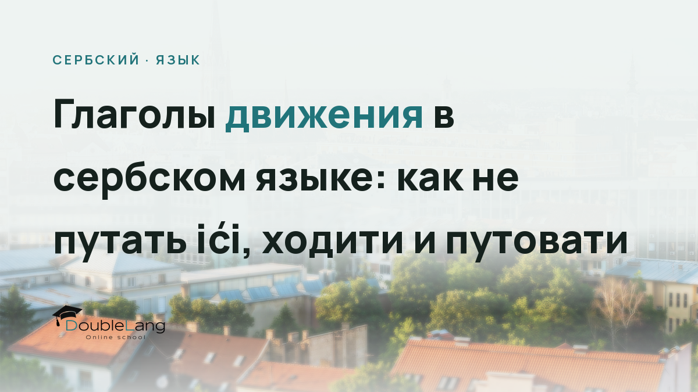

Если вы хотя бы раз пытались сказать по-сербски «Я иду в магазин» или «Я еду в Белград», вы наверняка задумывались: какой же глагол выбрать? Глаголы движения в сербском языке представляют особую сложность для русскоговорящих, потому что логика их употребления отличается от русской. Сегодня разберём три основных глагола (ići, ходити, путовати), научимся их различать и избежим самых распространённых ошибок.
В русском языке мы привыкли к паре «идти - ходить», где первый глагол обозначает направленное движение в один конец, а второй - повторяющееся или разнонаправленное. В сербском эта система работает иначе, и прямой перенос русской логики приводит к ошибкам, которые режут слух носителям.
Многие студенты удивляются, когда узнают, что сербы практически не используют глагол ходити в разговорной речи для обозначения пешего движения. Вместо этого в большинстве ситуаций звучит ići. А глагол путовати открывает ещё одну грань значений, связанную с путешествиями и дальними поездками.
Основные сербские глаголы движения: логика употребления
Прежде чем погружаться в детали спряжения и примеры, разберём базовую логику. В сербском языке система глаголов движения строится не столько на противопоставлении «однонаправленное - разнонаправленное», сколько на характере и способе передвижения.
Глагол ići - универсальный «идти/ехать»
Это главный глагол движения, который покрывает львиную долю ситуаций. Ići используется когда вы направляетесь куда-то в конкретный момент, независимо от способа передвижения (пешком, на транспорте, даже на велосипеде). Именно здесь кроется первая ловушка для русскоговорящих: мы привыкли разделять «идти» и «ехать», а в сербском оба значения может выражать один глагол.
Примеры использования:
- Идем у школу. (Иду в школу.)
- Идем колима. (Еду на машине.)
- Идемо на море. (Едем на море.)
- Куда идеш? (Куда идёшь/едешь?)
Обратите внимание: в последнем примере сербский собеседник может спросить «Куда идеш?», даже если видит, что вы садитесь в автобус. Контекст подскажет, идёт речь о пешем ходе или поездке.
Глагол ходити - редкий гость в разговорах
Вот здесь начинается самое интересное. В отличие от русского «ходить», сербский ходити в современном разговорном языке употребляется крайне редко. Сербы скажут «идем у школу сваки дан» (хожу в школу каждый день), а не «ходим». Глагол ходити сохранился в основном в устойчивых выражениях и литературном языке.
Когда вы всё-таки встретите ходити:
- Ходао је тамо-амо. (Он ходил туда-сюда, без цели.)
- Не волим да ходим по хладноћи. (Не люблю ходить по холоду.)
Для обозначения повторяющегося действия сербы используют ići в настоящем времени: «Идем на посао сваки дан» (Хожу на работу каждый день). Привыкайте к этой разнице с первых занятий, иначе потом переучиваться сложнее.
Внимание: типичная ошибка русскоговорящих - калька «ходим у школу» вместо «идем у школу». Такая фраза звучит архаично и выдаёт иностранца. В живой речи сербы почти всегда выбирают ići.
Глагол путовати - для настоящих путешествий
Третий участник нашей тройки обозначает именно путешествие, поездку на значительное расстояние или с определённой целью познакомиться с новым местом. Путовати несёт оттенок длительности, расстояния или туристического характера поездки.
Примеры:
- Путујем по Европи. (Путешествую по Европе.)
- Путовао сам возом до Ниша. (Ехал поездом до Ниша.)
- Волим да путујем. (Люблю путешествовать.)
Если вы говорите о регулярных деловых поездках или туризме, путовати подходит идеально. Но для обычного похода в магазин за углом он будет звучать комично.
Спряжение глагола ići в сербском языке: формы и времена
Переходим к практической части. Глагол ići относится к неправильным, и его формы нужно просто запомнить. Хорошая новость: он настолько частотный, что запоминается быстро при регулярной практике.
Настоящее время (презент)
Вот как спрягается сербский глагол идти в настоящем времени:
| Лицо | Форма | Пример |
|---|---|---|
| ја | идем | Ja идем кући. (Я иду домой.) |
| ти | идеш | Ти идеш с нама? (Ты идёшь с нами?) |
| он/она/оно | иде | Она иде у биоскоп. (Она идёт в кино.) |
| ми | идемо | Ми идемо наручак. (Мы идём на обед.) |
| ви | идете | Ви идете на екскурзију? (Вы едете на экскурсию?) |
| они/оне/она | иду | Они иду на утакмицу. (Они идут на матч.) |
Ударение падает на первый слог во всех формах, кроме 1-го лица множественного числа, где может варьироваться в зависимости от диалекта.
Прошедшее время (перфект)
Для образования прошедшего времени используется вспомогательный глагол бити (сам, си, је и т.д.) плюс причастие ишао/ишла/ишло:
- Ја сам ишао/ишла у продавницу. (Я ходил/ходила в магазин.)
- Они су ишли на море. (Они ездили на море.)
- Да ли си ишао на журку? (Ты ходил на вечеринку?)
Причастие согласуется по роду и числу с подлежащим. Мужской род - ишао, женский - ишла, средний - ишло, множественное число - ишли/ишле/ишла.
Будущее время
Будущее образуется двумя способами. Первый (перфективный) использует форму поћи (совершенный вид ići):
- Ја ћу поћи сутра. (Я пойду завтра.)
- Они ће поћи увече. (Они пойдут вечером.)
Второй способ - с помощью конструкции «хтети + да + презент»:
- Хоћу да идем. (Я хочу пойти / Я пойду.)
В живой речи чаще встретите первый вариант с поћи, он короче и естественнее.
Важно: глагол ići несовершенного вида, поэтому для обозначения законченного действия в будущем используйте его пару совершенного вида - поћи. Это одна из базовых тем в грамматике сербского языка, которую стоит отработать на практике.
Разница между ići и путовати: когда что выбрать
Теперь, когда формы глаголов понятны, разберёмся с контекстом употребления. Именно здесь спотыкаются даже продвинутые студенты.
Ići выбираем для:
- Любого движения с конкретной целью или направлением: идем на посао, идем код лекара, идем у град
- Поездок на транспорте в пределах города или на короткие расстояния: идем аутобусом, идем колима
- Регулярных перемещений: идем у школу сваки дан
- Неформальных ситуаций и разговорной речи
Путовати выбираем для:
- Туристических поездок: путујем по Србији, путовао сам у Грчку
- Длительных путешествий: путовао је месец дана
- Деловых поездок на значительные расстояния: путује у иностранство на конференцију
- Когда хотим подчеркнуть именно процесс путешествия, а не просто факт перемещения
Сравните две фразы:
Идем у Нови Сад сутра. (Еду в Нови-Сад завтра, обычная поездка, может быть по делу.)
Путујем у Нови Сад сутра. (Путешествую в Нови-Сад завтра, подчёркивается туристический характер или особая значимость поездки.)
Обе фразы грамматически правильные, но оттенок смысла разный. В первом случае вы можете ехать к родственникам или по работе, во втором - явно намекаете на экскурсионную программу.
Путовати: спряжение и особенности
Этот глагол относится к правильным глаголам на -овати, поэтому спрягается по стандартной модели:
| Лицо | Настоящее время | Прошедшее время |
|---|---|---|
| ја | путујем | путовао/ла сам |
| ти | путујеш | путовао/ла си |
| он/она | путује | путовао/ла је |
| ми | путујемо | путовали смо |
| ви | путујете | путовали сте |
| они/оне | путују | путовали су |
Совершенный вид - отпутовати (уехать, отправиться в путешествие). Пример: Отпутовао је јуче. (Он уехал вчера.)
Типичные ошибки русских при изучении сербского языка
За годы преподавания я собрала целую коллекцию ошибок, которые делают русскоязычные студенты с глаголами движения. Вот самые живучие из них.
Калькирование русской пары «идти - ходить»
Студент говорит: «Ходим у школу сваки дан» вместо «Идем у школу сваки дан». Эта ошибка возникает из-за прямого переноса русской логики, где «ходить» обозначает повторяющееся действие. В сербском для этого используется ići в настоящем времени. Ходити практически вышел из разговорного употребления.
Путаница «идти» и «ехать»
Русскоговорящие пытаются найти в сербском отдельный глагол для «ехать» и начинают использовать возити или вожњу, что звучит неестественно. В сербском ići покрывает оба значения. Можно добавить уточнение способа передвижения (идем колима, идем возом), но сам глагол остаётся тем же.
Неправильный выбор между ići и путовати
Студент говорит: «Путујем до пекаре» (путешествую до булочной). Это звучит комично, потому что путовати подразумевает значительное расстояние или туристическую поездку. Для похода в булочную за углом нужен только ići. И наоборот: «Идем по Европи» вместо «Путујем по Европи» обедняет смысл высказывания.
Ошибки в видовых парах
Многие забывают, что совершенный вид ići - это поћи, а не «ићи перфектно». В будущем времени нужно: «Ја ћу поћи», а не попытки образовать что-то от самого ići. Это базовая тема про совершенный и несовершенный вид в сербском, которую лучше отработать сразу.
Ещё одна распространённая проблема - игнорирование контекста. Студенты учат правило и пытаются применять его механически. Но язык живой: иногда сербы могут сказать «идем» там, где вы ожидали услышать «путујем», просто потому что для них это обыденная поездка, а для вас - целое путешествие. Слушайте, как говорят носители, обращайте внимание на контекст.
Как использовать глагол ići в разных временах: практические примеры
Теория без практики мертва, поэтому разберём живые примеры предложений на сербском с разными временными формами.
Примеры в настоящем времени
Настоящее время - самая частотная форма в разговоре. Вот как она работает в реальных ситуациях:
- Идем на пијацу да купим воће. (Иду на рынок купить фрукты.)
- Увек идемо тим путем. (Мы всегда ходим этим путём.)
- Куда они иду у ово доба? (Куда они идут в это время?)
- Не идем тамо више. (Я больше туда не хожу.)
Обратите внимание: одна и та же форма «идем» может переводиться на русский и как «иду» (сейчас), и как «хожу» (регулярно). Контекст определяет значение.
Примеры в прошедшем времени
Прошедшее время образуется с причастием, которое меняется по родам:
- Јуче сам ишао на концерт. (Вчера я ходил на концерт, мужчина говорит.)
- Јуче сам ишла на концерт. (Вчера я ходила на концерт, женщина говорит.)
- Нисмо ишли јер је падала киша. (Мы не пошли, потому что шёл дождь.)
- Да ли сте ишли код доктора? (Вы ходили к врачу?)
Примеры в будущем времени
Будущее с поћи звучит естественно и кратко:
- Сутра ћу поћи рано. (Завтра я пойду рано.)
- Хоће ли они поћи с нама? (Они пойдут с нами?)
- Нећемо поћи ако буде хладно. (Мы не пойдём, если будет холодно.)
Для тех, кто готовится к экзаменам по сербскому (например, к тесту для получения гражданства), владение этими формами критически важно. На Филолошком факултету Универзитета у Београду есть дополнительные материалы по грамматике, которые помогут углубить знания.
Глаголы движения в сербском языке: таблица для начинающих
Чтобы вся информация собралась в единую картину, вот сводная таблица основных глаголов движения:
| Глагол | Основное значение | Когда использовать | Пример |
|---|---|---|---|
| ићи (идем) | идти, ехать (процесс) | Любое направленное движение, регулярные действия, разговорная речь | Идем на посао. (Иду на работу.) |
| поћи (совершенный вид) | пойти, поехать | Начало движения, будущее время, однократное действие | Поћи ћу кући. (Я пойду домой.) |
| ходити (ходим) | ходить (архаично) | Редко, в устойчивых выражениях, литературный язык | Ходао је тамо-амо. (Ходил туда-сюда.) |
| путовати (путујем) | путешествовать, совершать поездку | Туризм, дальние поездки, длительные путешествия | Путујем по Србији. (Путешествую по Сербии.) |
| отпутовати (совершенный вид) | отправиться в путешествие, уехать | Начало путешествия, факт отъезда | Отпутовао је у Париз. (Он уехал в Париж.) |
Эта таблица может стать вашей шпаргалкой на первых порах. Распечатайте, держите под рукой, пока формы не закрепятся в памяти.
Разница между сербскими глаголами движения для начинающих: с чего начать
Если вы только начинаете изучать сербский язык для русскоговорящих, не пытайтесь охватить все нюансы сразу. Действуйте поэтапно.
Сначала отработайте базовые формы ići в настоящем времени. Это основа основ. Научитесь говорить «Идем у...» (Иду в...) и «Идем на...» (Иду на...) с разными местами: школа, посао, пијаца, град, море. Доведите до автоматизма, чтобы не задумываться.
Затем добавьте прошедшее время. Тренируйтесь на простых фразах: «Јуче сам ишао/ишла...» Следите за согласованием причастия по роду. Русскоговорящим это обычно даётся легко, потому что в русском похожая система.
Только после того, как ići будет «сидеть» уверенно, подключайте путовати. Начните с фраз про путешествия: «Волим да путујем», «Путовао сам у...» Почувствуйте разницу в контексте.
Ходити на начальном этапе можете отложить. Он вам почти не встретится в живой речи. Когда дойдёте до продвинутого уровня и начнёте читать литературу, тогда и познакомитесь с ним ближе.
Важно: лучший способ закрепить глаголы движения - это живая практика с преподавателем. На индивидуальных занятиях можно отработать именно ваши слабые места, получить обратную связь и исправить ошибки, пока они не укоренились. Самостоятельное изучение грамматики сербского языка эффективно только в связке с разговорной практикой.
Многие студенты DoubleLang замечают прогресс уже после нескольких занятий, когда начинают осознанно выбирать нужный глагол в зависимости от ситуации. Если вы готовитесь к экзамену (например, к тестированию для ВНЖ или гражданства), владение глаголами движения - один из базовых навыков, которые обязательно проверят.
Для тех, кто планирует сдавать экзамен по сербскому языку, полезно заглянуть на сайт Министарства унутрашњих послова Србије, где публикуются актуальные требования к языковому уровню для получения статуса резидента.
Частые вопросы
Как отличить ići от ходити в сербском?
В современном разговорном сербском почти всегда используется ići, а ходити встречается редко и звучит архаично. Для обозначения регулярного действия сербы говорят «идем» в настоящем времени (например, «идем у школу сваки дан»), а не «ходим», как в русском. Ходити сохранился в основном в литературных текстах и устойчивых выражениях.
Чем отличается ići от путовати?
Ići обозначает любое направленное движение (пешком или на транспорте) и используется для обычных, повседневных перемещений. Путовати используется для путешествий, поездок на значительные расстояния или когда хотят подчеркнуть туристический характер поездки. Сравните: «Идем у Нови Сад» (еду по делу) и «Путујем у Нови Сад» (путешествую, осматриваю город).
Как спрягается глагол ići в сербском языке?
Глагол ići неправильный. В настоящем времени: ја идем, ти идеш, он/она иде, ми идемо, ви идете, они иду. В прошедшем: сам ишао/ишла, си ишао/ишла, је ишао/ишла (причастие согласуется по роду). Совершенный вид - поћи, для будущего времени: ја ћу поћи, ти ћеш поћи и т.д.
Какие глаголы движения есть в сербском языке?
Основные глаголы движения в сербском: ићи/поћи (идти, ехать), ходити (ходить, редко используется), путовати/отпутовати (путешествовать), возити се (ездить на транспорте, кататься), трчати (бежать), шетати (гулять), летети (лететь). Самый универсальный и частотный - ићи.
Почему сербы говорят ići, а не ходити?
Это особенность развития сербского языка. В отличие от русского, где сохранилась чёткая пара «идти - ходить» (однонаправленное и многонаправленное движение), в сербском ići взял на себя обе функции в разговорной речи. Ходити постепенно вышел из активного употребления и остался в основном в книжном стиле. Современные сербы воспринимают ходити как устаревшее или слишком формальное слово.
Как правильно сказать «я еду» на сербском?
Правильно: «Идем» (с уточнением способа передвижения, если нужно). Например: «Идем колима» (еду на машине), «Идем возом» (еду поездом), «Идем аутобусом» (еду автобусом). В сербском нет отдельного глагола для «ехать» в том смысле, в каком он есть в русском, - глагол ići покрывает оба значения («идти» и «ехать»).
Глаголы движения - это не просто грамматическая тема, это ключ к естественной сербской речи. Когда вы научитесь интуитивно чувствовать разницу между ићи и путовати, понимать, почему сербы не говорят ходити в обычных ситуациях, вы сделаете огромный шаг к свободному владению языком. Не бойтесь ошибаться, слушайте живую речь, практикуйтесь с носителями или преподавателем. Каждый разговор приближает вас к тому моменту, когда правильный глагол будет сам «приходить» в голову, без мучительного перебора вариантов. Удачи вам на этом пути!
Сделайте первый шаг к вашей цели
Запишитесь на пробное занятие в DoubleLang и получите индивидуальный план подготовки к экзамену и переезду от наших методистов.
Записаться на пробный урок